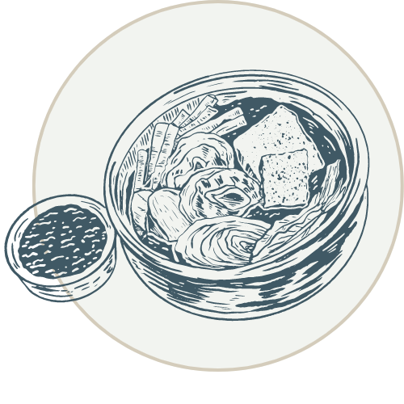

Community Fridges Cambridge and Somerville
Due to the pandemic, job economy, housing market, and increasing food prices... food insecurity has been a major issue for our community. Community fridges and pantries have been made available for the public to have access to free healthy and fresh food, as well as essential supplies. This resource is to help bridge the gap between food resources, volunteers, and people in need.

What Is a community fridge?
Community fridges act as a grassroots response to a food insecurity crisis. People are unable to acquire, enough food due to insufficient money or other resources, so fridges and pantries were created to help serve the community. Covid has increased this need, and also provides a no contact option for those at high risk. Volunteers help run these locatings, by networking on social media and utilizing sign up forms. Each location are given sets of donation rules to ensure the health and safety of the consumer, and to eliminate the risk of any foodborne illness.

Why is volunteering important?
Volunteers are an essential part of fighting hunger in our community. They stock fridges and transport items for people struggling to feed their families. Without their support, we simply could not feed as many people as we do. We encourage you to contribute to a fridge! You can drop off some frozen veggies,collect donations from others to re-stock an empty fridge, or help clean and maintain the shelves. It is your actions that can make a difference!